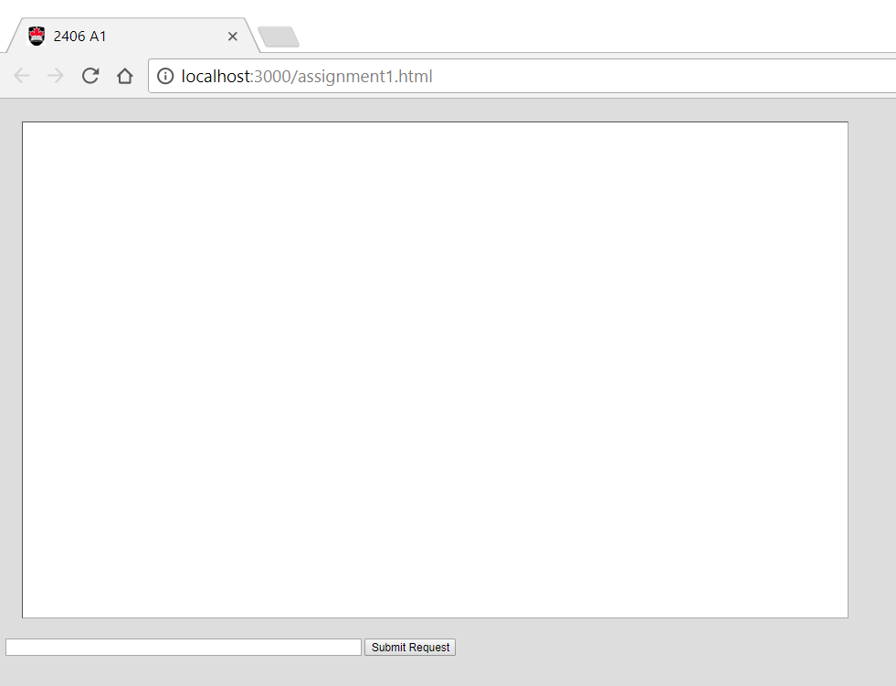
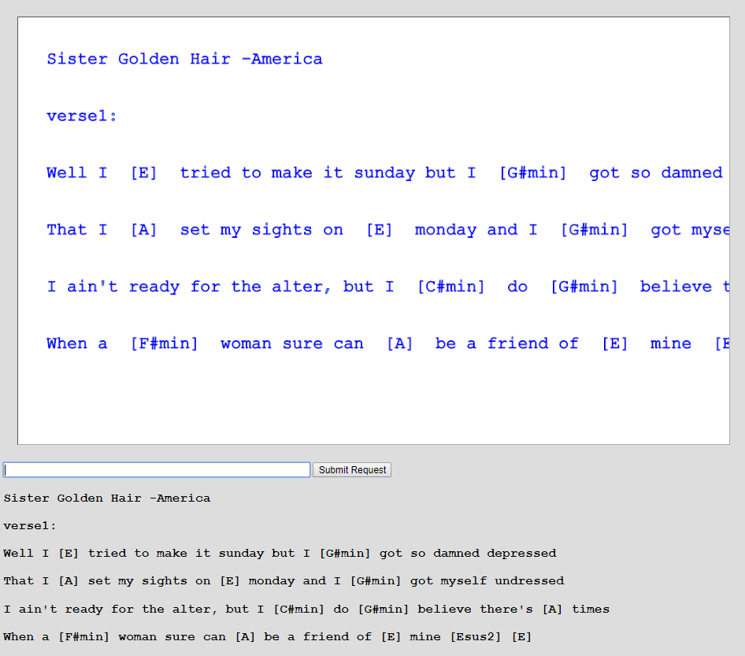

Assignment Revisions and Corrections will be noted here.
In this assignment you are going build part I of a small single-page web app that is based on just the native capabilties of Node.js and javascript. Specifically you will build an app that allows a user to open a chord pro (chords and lyrics) file hosted by a node.js server and then within their browser drag the words and chord symbols around. This assignment is based on the contents of tutorials 01 and 02. It is not a particularly difficuly assignment but it will be challenging just because a lot of the material is new to you (by the end of the course this will seem more like just a tutorial exercise).
The components are:
Server: build with just Node.js and its built-in modules (e.g. http, path, fs, url) and whatever javascript you want to write. (We are not allowing extra npm modules yet in this assignment; only what is built into node.js itself.)
Client: browser which is provided with a web page from the server consisting of html, css, javascript and jquery. You can use which ever of these your want.
Assignment Restrictions:
Technology Restrictions: Because each layer of node.js/javascipt-based technologies, like npm modules or the express.js framework, solves many problem you encounter, in this assignment we will not allow their use yet. In later assignments we will bring these in and focus on new challenges. So pay attention to the technology restrictions in the various assignments in the course.
Assignments can be done in pairs: If you want to work with a partner you can. Please only submit one copy to culearn with both your names on it. (In the past we have had pairs who each thought the other member would submit and so nothing was submitted. Both will get a zero if this happens.)
Marking: This assignment is based on 11 design requirements numbered R1.1...R3.5 for a total of 22 marks.
Marks are awarded, or deducted, based on requirements as follows:
| R0.x | The assignment gets 0 marks if any submission requirement, shown in red, is not met. Meeting these requirements is critical. |
| R0.x | 5 marks are deducted from assignment score for each good practice requirement, shown in yellow, not met. |
| Rx.x | We will award 2 marks for each design requirement that is met and well implemented, 1 mark for those only partly met or met but poorly implemented, and 0 marks for any not met. |
The following requirements pertain to all your assignments regardless of what your application is supposed to do (i.e. regardless of the design requirements). These requirements are to ensure that your code is usable, readable, and maintainable.
R0.0 UNIQUENESS REQUIREMENT. The solution and code you submit MUST be unique. That is, it cannot be a copy of, or be too similar to, someone else's code, or other code found elsewhere. You are, however, free to use any code posted on our course web site as part of our assignment solution. [Assigment mark =0 if this requirement is not met.]
R0.1 CODE SUBMISSION ORGANIZATION AND COMPILATION: You should submit all the code files and data files necessary to compile and run your app. The TA's will execute your app with node app.js. unless alternative instructions are provided in a README.txt file. If you compress your code when submitting to culearn you must use only .zip format (not .rar or .tar or whatever). Though you are permitted to write code on Windows, Linux, or Mac OS the code should be generic enough to be OS agnostic. Your code must work with at least a current Chrome browser. [Assigment mark =0 if this requirement is not met.]
R0.2 README FILE: Your submission must include a README.txt file telling the TA how to setup and run your app. The TA should not have to look into your code to figure out how to start up your app. Your README.txt must contain the following:
Version: node.js version number and OS your code was tested on.
Install: how to install needed code. This will likely look like npm install or npm install module_name
Launch: Instructions on how to launch your app. e.g. node myserver.js. As the course progresses there will be more launch options to it's important to provide instructions.
Testing: Instructions on what the TA should do to run your app. e.g. visit http://localhost:3000/mytest.html?name=Louis. If your app requires a userid/password to run then provide one for the TA to use.
Pay attention to any specific URL's that must be supported by your app. [Assigment mark =0 if this requirement is not met.]
R0.3 VARIABLE AND FUNCTION NAMES: All of your variables and functions should have meaningful names that reflect their purpose. Don't follow the convention common in math courses where they say things like: "let x be the number of customers and let y be the number of products...". Instead call your variables numberOfCustomers or numberOfProducts. Your program should not have any variables called "x" unless there is a good reason for them to be called "x". (One exception: It's OK to call simple for-loop counters i,j and k etc. when the context is clear and VERY localized.) Remember javascript does not have typed variables or functions so choosing good names is even more important. Many functions in javascript are annonymous (have no name) and so the name of the variable that refers to them is even more important. [Minus 5 marks from assignment if this requirement is not met.]
R0.4 COMMENTS: Comments in your code must coincide with what the code actually does. It is a very common bug in industry for people to modify code and forget to modify the comments and so you end up with comments that say one thing and code that actually does another. By the way, try not to over-comment your code but instead choose good variable names and function names that make the code more "self commenting". [Minus 5 marks from assignment if this requirement is not met.]
R0.5 CITATION REQUIREMENT: If you use code from other sources you should cite the source in comments that appear with the code. If the source is an internet website then put the URL in the comments. You may use code from outside sources but this may not form the complete solution you are handing in. [Minus 5 marks from assignment if this requirement is not met.]
VERY IMPORTANT: Any sample code fragments provided may have bugs (although none are put there intentionally). You must be prepared to find errors in the requirements and sample code. Please report errors so they can be fixed and an assignment revision noted.
In tutorial 02 you will have done an exercise with node.js to open and read arrays of words from a server (as a JSON strings) and placed them on an HTML5 canvas and allowed the user to move them around with a mouse. (Review tutorial 02 if necessary.) For this assignment we want to serve the client the contents of chord-pro files stored on the server. Below is an example of the chord pro text file. The file format represents the lyrics of songs with chord symbols embedded within the lyrics. The chord symbols appear within the []. This format is convenient because the chords always stay in the correct relative position with the lyrics.
Chord Pro Text File:
Sister Golden Hair -America verse1: Well i [E] tried to make it sunday but i [G#min] got so damned depressed That i [A] set my sights on [E] monday and i [G#min] got myself undressed I ain't ready for the alter, but i [C#min] do [G#min] believe there's [A] times When a [F#min] woman sure can [A] be a friend of [E] mine [Esus2] [E] verse2: Well i [E] keep on thinkin bout you sister [G#min] golden hair surprise That i just can't live without you can't you [G#min] see it in my eyes I've been [A] one poor corre[F#min]spondent, i've been [C#min] too too [G#min] hard to [A] find But it [F#min] doesn't mean you [A] ain't been on my [E] mind [Esus2] [E] chorus: Will you [B] meet me in the middle will you [A] meet me in the [E] end Will you [B] love me just a little just en[A]ough to show you [E] care Well i [F#min] tried to fake it i [G#min] don't mind sayin i [A] just can't make it repeat intro, then verse 2, then chorus, then they do this doo-wop thing that uses the chorus (B - A - E) thing
We want you to build a client-server single page app so that the lyrics (words) and chords are displayed in a browser web page. Moreover, once displayed, the user should be able to drag individual words or chord symbols around with the mouse.
This is intended to be a single page app (where the user just makes one request to a particular URL) and is based on the HTML5 canvas app presented in tutorial 02.
To do this assignment you need to be able to do things like the following (much of it based on tutorials 02 and lecture demos:
Open and read files on the server.
Send JSON objects from server to browser in response to a request.
Convert javascript objects to JSON strings and vice versa.
Send GET or POST requests from client to server and extract the response data.
Receive GET or POST requests from the client and formulate a response.
Send HTML and javascript to the broswer page to react to mouse events and drag items around.
So the challenge will be to combine the capablities from the tutorial and class demo code to form the application and also solve a few additional problems that inevitably fall through the cracks. You are free to make use of any code we post on the course website as part of your assignment solution.
R1.1 The server code should use only javascript and node.js with build-in modules (not use any external npm modules or the express.js framework).
R1.2 The server should have a directory of chord pro formated text files (use .crd or .txt extension as you prefer). So the server does not store data in an intermediate format like JSON strings -it stores data a chord-pro text files.
R1.3 The server should allow a client, via a browser, to request a particular song (based on song title).
R1.4 Server should be hosted on port 3000 and reachable from a browser on the same machine visiting http://localhost:3000/assignment1.html (Your ReadMe.txt file should tell the TA what specific URL to use to test your application.)
R2.1 The server should send the html representing the app when the user visits http://localhost:3000/assignment1.html
R2.2 The exchange of chord/lyric data between client and server should be in the form of JSON objects strings.
R3.1 The client webpage should have an HTML5 canvas area, a text input, a "Submit Request", button and look something like the following:

R3.2 The client should be able to request a song from the server by typing the song title in the text field and clicking the "Submit Request" button. If the song is available on the server the download song should be displayed for the client as shown below.

R3.3 The lyrics and chords shown on the canvas should be in the chord-pro format but be drag-able. That is, the user should be able to drag the individual words or chords to new positions on the canvas with their mouse.
R3.4 The original chord pro text downloaded from the server should be shown as individual html paragraph lines below the canvas. (This should be done by having the client-side javascript add <p> elements to the current web page -as was done in tutorial 02.)
R3.5 If the client requests a song from the server that does not exist the canvas should appear blank and their should be no paragraph<p> content below it. (That is, the UI should be blank but the code should not crash.)
We've simplified the three test song files provided so they only consist of one verse or chorus of text. That is sufficient for the assignment -you don't need to use long files of the entire song.
You can use .txt extensions instead of .crd for you test files. This makes them easier to view with other apps or the browser.
I've added some chord-pro txt files in a songs directory with this assignment that you can use to test with. You can easily generate chord pro files on the http://www.chordie.com/ website. On this site you can create a songbook and add songs. When you select songs in your songbook there is an option to edit them which will show you the raw chord pro format which you can cut and paste to a text file. The following website also has a lot of chord pro files available: http://getsome.org/guitar/olga/chordpro/